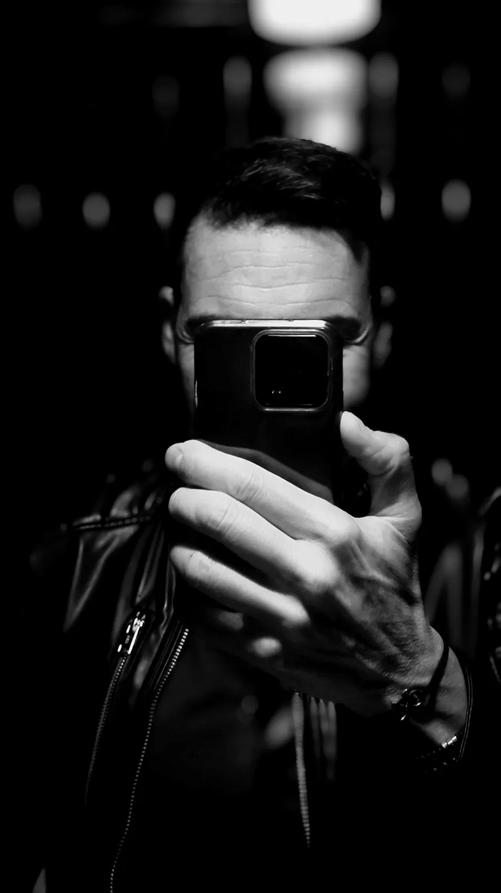

Acerca de
El Señor Canalla
Hay nombres que uno elige y otros que se gana entre amigos, casi sin darse cuenta. El Señor Canalla nació de una conversación y de una apuesta personal: darle forma a ese punto de descaro que sobrevive a los años y sigue encontrando buenos motivos para alargar una noche.
El espíritu venía de un grupo de amigos de mediana edad, aficionados a la juerga, al cachondeo y a las conversaciones sin hora de cierre. Cada uno con su carácter, sus maneras y su propia idea de casi todo. Nos unía ese punto canalla, guasón y simpático de quien disfruta de la vida y sabe reírse, empezando por uno mismo.
El nombre terminó de cuajar alrededor de una mesa. Solíamos cenar en un restaurante de luz tenue y aire ecléctico, uno de esos lugares que invitan a quedarse un rato más. Yo reservaba a nombre de «los canallas». Y, entre una reserva y otra, el nombre acabó quedándose conmigo: el Señor Canalla.
Después llegaron las camisetas. La ocurrencia de llevar aquel guiño puesto abrió la puerta a jugar con letras, imágenes y diseños. De ese juego nace también esta web: de la curiosidad por ver hasta dónde puede llegar una idea cuando uno se permite seguirle la corriente.
Eso es el Señor Canalla. Una pequeña aventura personal, hecha con gusto, humor y cierta querencia por las horas en las que ya deberíamos habernos ido a casa.